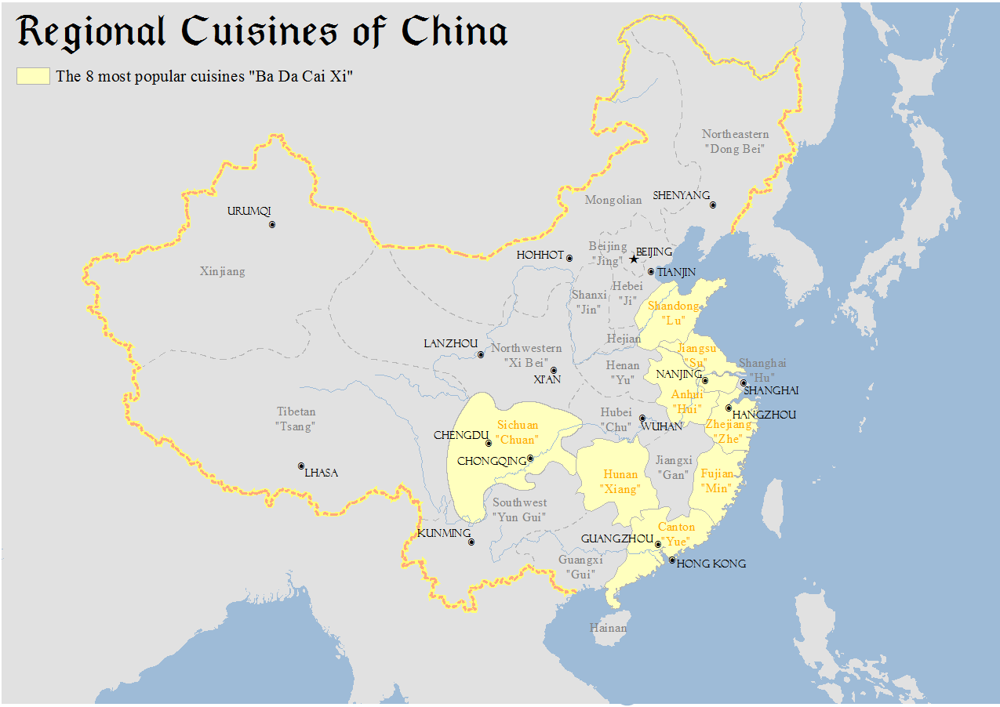
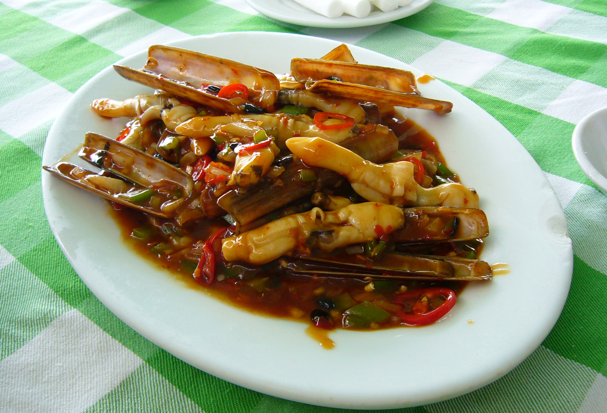
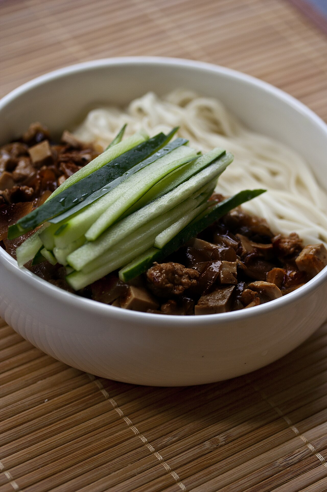
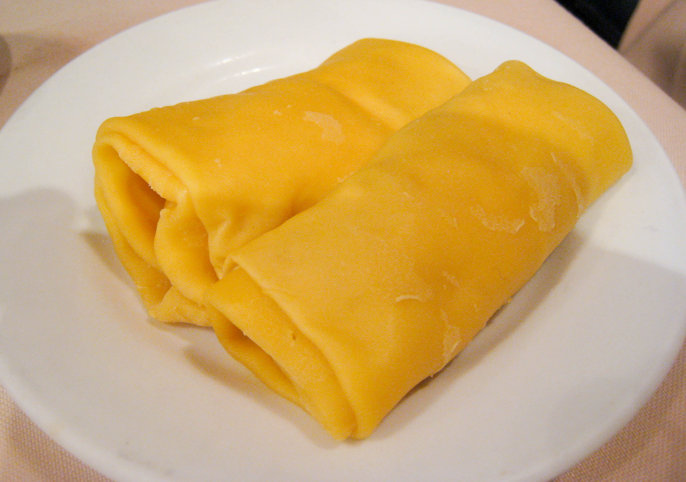
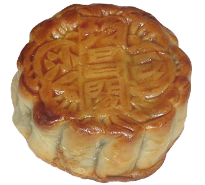

Welcome to our Cuisine Website!
Chinese Cuisine
Chinese cuisine comprises cuisines originating from China, as well as from Chinese people from other parts of the world. Because of the Chinese diaspora and the historical power of the country, Chinese cuisine has profoundly influenced other cuisines in Asia and beyond, with modifications made to cater to local palates. Chinese food staples like rice, soy sauce, noodles, tea, chili oil, and tofu, and utensils such as chopsticks and the wok, can now be found worldwide.
The world's earliest eating establishments recognizable as restaurants in the modern sense first emerged in the Song dynasty China during the 11th and 12th centuries.[1][2] Street food became an integral aspect of Chinese food culture in the 7th century during the Tang dynasty, and the street food culture of much of Southeast Asia was established by workers imported from China during the late 19th century.[3]
The preferences for seasoning and cooking techniques in Chinese provinces depend on differences in social class, religion, historical background, and ethnic groups. Geographic features including mountains, rivers, forests, and deserts also have a strong effect on the locally available ingredients, considering that the climate of China varies from tropical in the south to subarctic in the northeast. Imperial royal and noble preferences also play a role in the change of Chinese cuisine. Because of imperial expansion, immigration, and trading, ingredients and cooking techniques from other cultures have been integrated into Chinese cuisines over time and Chinese culinary influences have spread worldwide.
There are numerous regional, religious, and ethnic styles of Chinese cuisine found within China and abroad. Chinese cuisine is highly diverse and most frequently categorised into provincial divisions, although these province-level classifications consist of many more styles within themselves. During the Qing dynasty, the most praised Four Great Traditions in Chinese cuisine were Chuan, Lu, Yue, and Huaiyang, representing cuisines of West, North, South, and East China, respectively.[4][5] In 1980, a modern grouping from Chinese journalist Wang Shaoquan's article published in the People's Daily newspaper identified the Eight Cuisines of China as Anhui (徽菜; Huīcài), Guangdong (粵菜; Yuècài), Fujian (閩菜; Mǐncài), Hunan (湘菜; Xiāngcài), Jiangsu (蘇菜; Sūcài), Shandong (魯菜; Lǔcài), Sichuan (川菜; Chuāncài), and Zhejiang (浙菜; Zhècài).[6][5]

An assortment of Chinese food.
Regional Cuisines
Chinese cuisine exhibits an immense amount of regional diversity. A number of different styles contribute to Chinese cuisine but perhaps the best known and most influential are Cantonese cuisine, Shandong cuisine, Jiangsu cuisine (specifically Huaiyang cuisine) and Sichuan cuisine.[33][34] These styles are distinctive from one another due to factors such as availability of resources, climate, geography, history, cooking techniques and lifestyle.[35]
One style may favour the use of garlic and shallots over chili and spices, while another may favour preparing seafood over other meats and fowl. Jiangsu cuisine favours cooking techniques such as braising and stewing, while Sichuan cuisine employs baking. Zhejiang cuisine focuses more on serving fresh food, Fujian cuisine is famous for its seafood and soups and the use of spices, Hunan cuisine is famous for its hot and salty taste, Anhui cuisine incorporates wild ingredients for an unusual taste.[36]
Based on the raw materials and ingredients used, the method of preparation and cultural differences, a variety of foods with different flavors and textures are prepared in different regions of the country. Many traditional regional cuisines rely on basic methods of preservation such as drying, salting, pickling and fermentation.[37]
In addition, the "rice theory" attempts to describe cultural differences between north and south China; in the north, noodles are more consumed due to wheat being widely grown whereas in the south, rice is more preferred as it has historically been more cultivated there.[38]

Map showing major regional cuisines of China
Soybean Products
Tofu is made of soybeans and is another popular food product that supplies protein. The production process of tofu varies from region to region, resulting in different kinds of tofu with a wide range of texture and taste.[37] Other products such as soy milk, soy paste, soy oil, and fermented soy sauce are also important in Chinese cooking.
There are many kinds of soybean products, including tofu skin, smoked tofu, dried tofu, and fried tofu.Stinky tofu is fermented tofu. Like blue cheese or durian, it has a very distinct, potent and strong smell, and is an acquired taste. Hard stinky tofu is often deep-fried and paired with soy sauce or salty spice. Soft stinky tofu is usually used as a spread on steamed buns.
Doufuru is another type of fermented tofu that has a salty taste. Doufuru can be pickled together with soy beans, red yeast rice or chili to create different color and flavor. This is more of a pickled type of tofu and is not as strongly scented as stinky tofu. Doufuru has the consistency of slightly soft blue cheese, and a taste similar to Japanese miso paste, but less salty. Doufuru can be used as a spread on steamed buns, or paired with rice congee.
Sufu is one other type of fermented tofu that goes through ageing process. The color (red, white, green) and flavor profile can determine the type of sufu it is. This kind of tofu is usually eaten alongside breakfast rice.[45]
Soybean milk is soybean-based milk. It is a morning beverage, and it has many benefits to human health.[46]

Several kinds of soybean products are sold in a farmer's market in Haikou, China.

Stir-fried razor shell with douchi (fermented black soybeans) in Jiaodong style
Vegetables
Apart from vegetables that can be commonly seen, some unique vegetables used in Chinese cuisine include baby corn, bok choy, snow peas, Chinese eggplant, Chinese broccoli, and straw mushrooms. Other vegetables, including bean sprouts, pea vine tips, watercress, lotus roots, chestnuts, water chestnuts, and bamboo shoots, are also used in different cuisines of China.
Because of different climate and soil conditions, cultivars of green beans, peas, and mushrooms can be found in rich variety.
A variety of dried or pickled vegetables are also processed, especially in drier or colder regions where fresh vegetables were hard to get out of season.
Meat
The most commonly consumed meat in China is pork. As of at least 2024, China is the second largest beef consuming market in the world.[50]: 85 Steakhouses and hot pot restaurants serving beef are becoming increasingly popular in urban China.[50]: 85 Chinese consumers particularly value freshly slaughtered beef.[50]: 86
Outside China
Where there are historical immigrant Chinese populations, the style of food has evolved and been adapted to local tastes and ingredients, and modified by the local cuisine, to greater or lesser extents. This has resulted in a deep Chinese influence on other national cuisines such as Cambodian cuisine, Filipino cuisine, Singaporean cuisine, Thai cuisine and Vietnamese cuisine.
Chinatowns across the world have been instrumental in shaping the national cuisines of their respective countries, such as the introduction of a street food culture to Thailand in Bangkok Chinatown. There are also a large number of forms of fusion cuisine, often popular in the country in question. Some, such as ramen (Japanese Chinese cuisine), which originated in Yokohama Chinatown, have become popular internationally.
Deep-fried meat combined with sweet and sour sauce as a cooking style receives an enormous preference outside of China. Therefore, many similar international Chinese cuisines are invented based on sweet and sour sauce, including Sweet and sour chicken (Europe and North America), Manchurian chicken (India) or tangsuyuk (South Korea).Apart from the host country, the dishes developed in overseas Chinese cuisines are heavily dependent on the cuisines derived from the origin of the Chinese immigrants. In Korean Chinese cuisine, the dishes derive primarily from Shandong cuisine while Filipino Chinese cuisine is strongly influenced by Fujian cuisine. American Chinese cuisine has distinctive dishes (such as chop suey) originally based on Cantonese cuisine, which are more popular among non-Chinese Americans than with Chinese Americans themselves.[67][68]
Chinese diaspora cuisine includes dishes that originated in mainland China but evolved abroad through migration and local adaptation. Examples include the St. Paul sandwich in the United States, bakmi ayam in Indonesia, pancit canton in the Philippines, and hủ tiếu in Vietnam, all of which reflect changes in ingredients, preparation methods, and eating habits shaped by regional tastes and availability.[69]

Zhájiàng Miàn (noodles with bean paste) is a traditional northern Chinese dish. It has spread to South Korea where it is known as Jajangmyeon.

Mango pancake is an Australian Chinese dish, commonly as a dim sum at yum cha restaurants
American Chinese cuisine
Chop suey, crab rangoon, General Tso's chicken, egg foo young, orange chicken
Australian Chinese cuisine
Mango pancake, dim sim, XO sauce pipis
Irish Chinese cuisine
Chicken balls, Spice bag
Burmese Chinese cuisine
Kyay oh, Sigyet khauk swè
Canadian Chinese cuisine
Ginger beef
Caribbean Chinese cuisine
Cha chee kai, bangamary ding
Filipino Chinese cuisine
Arroz caldo, Batchoy, Pancit
Indian Chinese cuisine
Gobi manchurian, Manchow soup
Indonesian Chinese cuisine
Bakso, Cap cai, Lumpia, Mie ayam, Mie goreng, Swikee, Siomay, Kepiting saus tiram
Japanese Chinese cuisine, Shippoku
Champon, Ramen, Gyoza, Kakuni, Tenshindon
Korean Chinese cuisine
Jajangmyeon, jjamppong, hotteok, Tangsuyuk
Chinese Latin American cuisine
Peruvian Chinese cuisine (Chifa)
Arroz chaufa, Lomo saltado
Puerto Rican Chinese cuisine
Carne Ahumada
Malaysian Chinese cuisine/Singapore Chinese cuisine
Hainanese chicken rice, Bak kut teh, Heong Peng, Yam ring, Kaya toast (often seen in kopitiam)
Peranakan cuisine
Laksa (include Curry mee), Ayam buah keluak, Pie tee
New Zealand Chinese cuisine
Pakistani Chinese cuisine
Jalfrezi
Thai Chinese cuisine
Pad thai, Khao soi, Phat kaphrao, Thai suki
Cambodian Chinese cuisine
Kuyteav, Lort cha
Vietnamese Chinese cuisine
Banh bao
Relation to Chinese philosophy and religion
Food plays various roles in social and cultural life. In Chinese folk religion, ancestor veneration is conducted by offering food to ancestors and Chinese festivals involve the consumption and preparation of specific foods which have symbolic meanings attached to them. Specific religions in China have their own cuisines such as the Taoist diet, Buddhist cuisine and Chinese Islamic Cuisine.
The Kaifeng Jews in Henan province once had their own Chinese Jewish cuisine but the community has largely died out in the modern era and not much is known about the specifics of their cuisine but they did influence foods eaten in their region and some of their dishes remain.[74] Chinese dishes with purported Kaifeng Jewish roots include Kaifeng xiao long bao, Mayuxing bucket-shaped chicken, Chrysanthemum hot pot, and Four Treasures.[75]
Food also plays a role in daily life. The formality of the meal setting can signify what kind of relationship people have with one another, and the type of food can indicate ones' social status and their country of origin.[40] In a formal setting, up to sixteen of any combination of hot and cold dishes would be served to respect the guests. On the other hand, in a casual setting, people would eat inexpensive meals such as at food stalls or homemade food. The typical disparity in food in the Chinese society between the wealthy and everyone below that group lies in the rarity and cost of the food or ingredient, such as shark fins and bear paws.[40]
Depending on whether one chooses to have rice or a meal that is made of wheat flour such as bread or noodles as their main source of food, people within a similar culture or of a different background can make an assumption of the other's country of origin from the south or north of China. Different foods have different symbolic meanings. Mooncakes and dumplings are symbolic of the Mid-autumn festival and the Spring Festival, respectively.[40] Pear symbolizes bad luck due to its similarity in pronunciation of 'away' in the native language and noodle means living a long life for its length.[40][73]
In Chinese philosophy, food frequently conveys a message. A Chinese philosophy I Ching says, "Gentlemen use eating as a way to attain happiness. They should be aware of what they say, and refrain from eating too much."[76]

Mooncake, eaten during the Mid-Autumn Festival
All @copyrights reserved by us.